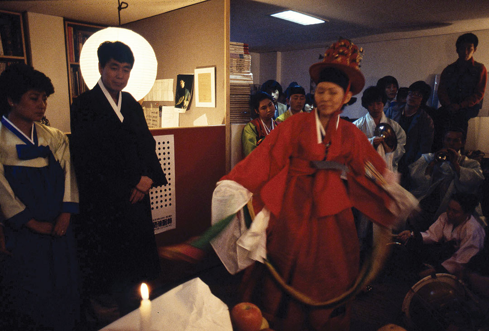
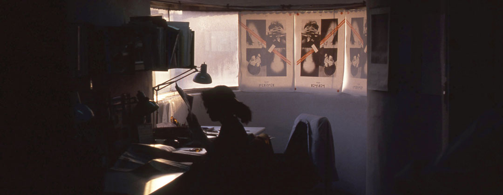
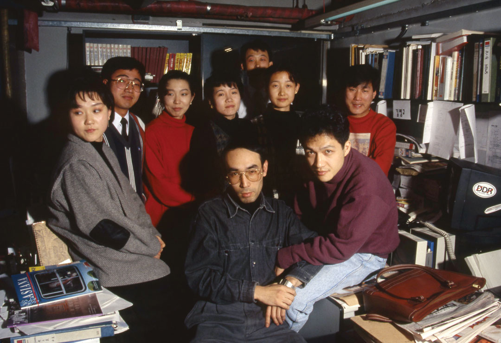
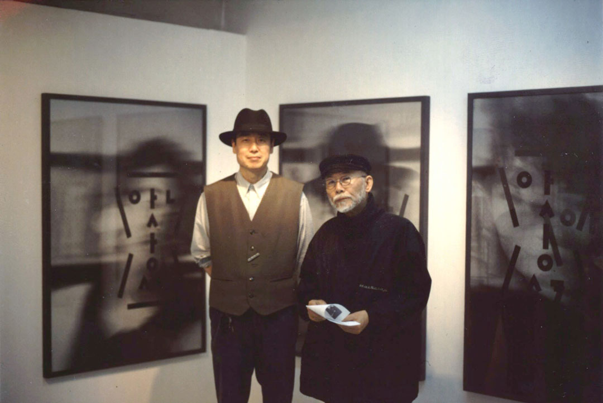
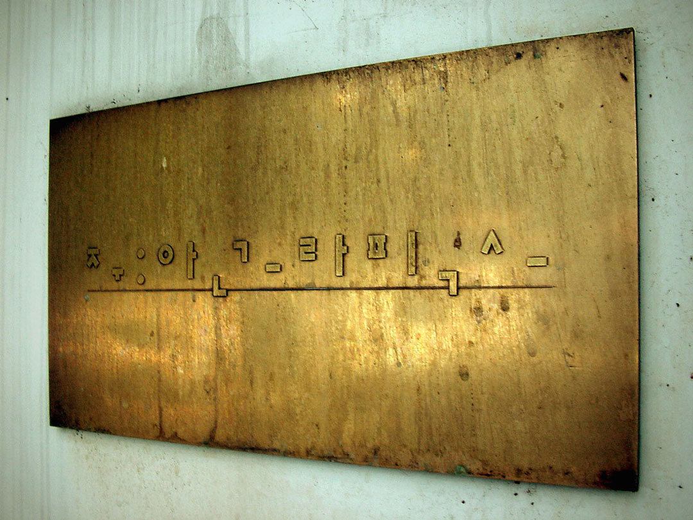
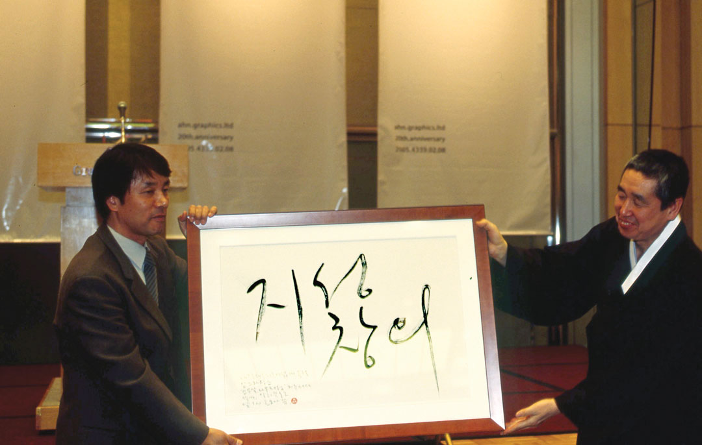
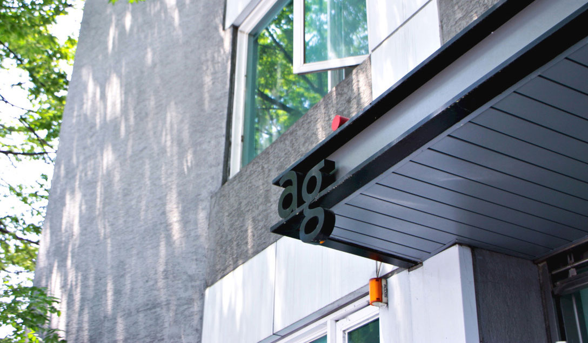
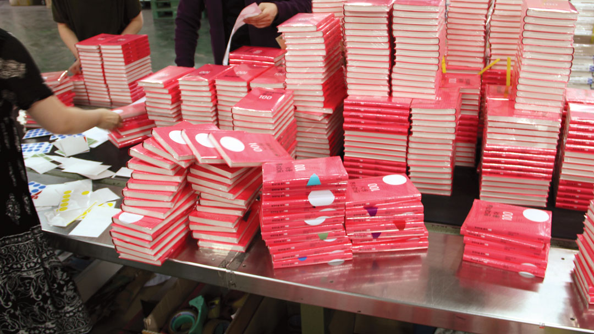
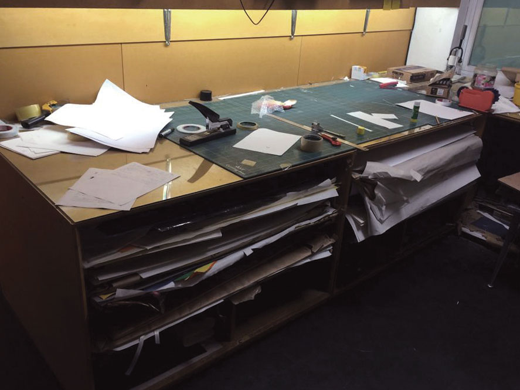

AG Seoul
AG Books
AGTI
AG Lab
Mabasa
AG Font
Ahn Shop
☰

굿을 하는 만신 김금화
1985.3

사무실 한쪽 끝에 마련한 암실에서 작업하고 있는 사진 스태프 최온성
1990.10

두손빌딩 식구들. 박소영, 박구영, 김은정, 문혜원, 최우식, 김은영, 김창욱, 임영한, 김두섭
1991.1

사이 갤러리에서 열린 〈보고서/보고서 0.1.세기 새 선언전〉. 그해 15호를 발행한 《보고서/보고서》 발간 10주년을 맞아 전시를 준비했다.
1998.9

성북동 본관 입구에 붙어 있던 안그라픽스 현판
2004.7

20주년을 맞아 새롭게 정립한 안그라픽스 사훈 ‘지성과 창의’
2005.9

새로운 ag 로고로 만든 성북동 본관 입구의 간판
2009.6

《현대미술 용어 100》 스티커 부착
2012.5

출력물을 직접 재단하고 제본할 수 있는 성북동 본관 2층의 공작실
2013.12
진행하고 있는 프로젝트 관련 자료를 각기 정리해 둔 서류철
2014.6